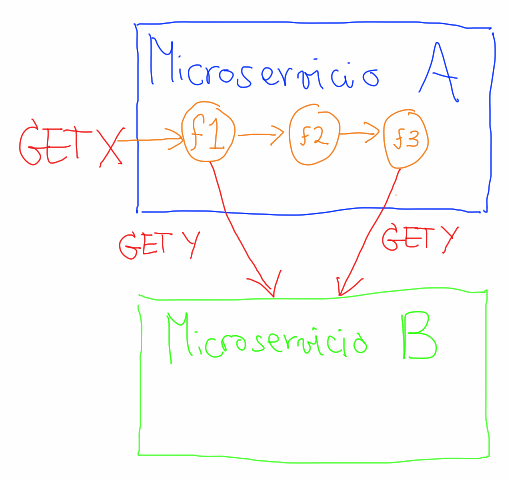

Entendiendo Haxl usando Scala: (Parte 0)
Haxl es una librería de Haskell que facilita la obtención de datos de diferentes fuentes. Haxl fue desarrollada por Facebook y en 2014 publicaron un artículo académico explicándola. Hace poco ménos de un año leí ese artículo y, para mi sorpresa, entendí lo suficiente como para tratar de traducirla a Scala.
Este es el inicio de una serie de posts en los que intentaré explicar qué hace Haxl y cómo está implementado. Para esto usaré código en Scala que será una traducción mas o menos equivalente del mismo código en Haskell. Existen varias implementaciones en Scala: una desarrollada por twitter y otra por desarrolladores de soundcloud. La implementación de juguete que se mostrará en esta serie de posts, por su parte, se ceñirá mucho a su origen en Haskell pero utilizará muchas cosas propias de Scala.
Entonces empecemos:
¿Para que sirve Haxl?
Principalmente Haxl permite:
- Acumular multiples consultas a una fuente de datos en una sola consulta en batch.
- Realizar consultas en paralelo sobre multiples fuentes de datos.
- Cachear consultas anteriores.
Esto le permite a un programador delegar el batching, paralelismo y cacheo a la librería y así concentrarse en la lógica de negocio. Esto facilita escribir código que es mas entendible y modular y que al mismo tiempo tiene buen rendimiento. Y dado que tendencias actuales como microservicios exigen el uso de multiples fuentes de datos Haxl aparece como una excelente alternativa a hacer estas optimizaciones manualmente.
Veamos cada uno de los anteriores puntos en detalle:
Batching
¿A que me refiero con batching? Digamos que tenemos un endpoint HTTP donde podemos solicitar un recurso, por ejemplo un usuario según su id:
GET /usuarios/<id-usuario>y queremos consultar los usuarios con identificadores usuario-1, usuario-2 y usuario-3. Podríamos realizar 3 consultas independientes a ese endpoint:
GET /usuarios/usuario-1GET /usuarios/usuario-2GET /usuarios/usuario-3Pero esto es costoso, aun cuando paralelicemos las consultas. Estámos abriendo y cerrando 3 conexiones HTTP a, posiblemente, la misma maquina. En cambio si el endpoint ofrece un API en batch podríamos hacer una sola solicitud:
GET /usuarios?ids=usuario-1,usuario-2,usuario-3Esto no solo cuenta para APIs HTTP. Por ejemplo Redis tiene el comando MGET que permite obtener múltiples valores a partir de una secuencia de llaves. Y adicionalmente esto no solo se reduce a APIs en batch que devuelven el mismo tipo de resultado. Si el API permite enviar multiples solicitudes, posiblemente heterogeneas, en el mismo paquete entonces estas podrían hacerse cómo una sola solicitud en batch (Como lo explican en el artículo el repositorio TAO de facebook lo permite).
La promesa de Haxl en este aspecto es hacer el batching automáticamente (dado que uno configure la librería para que reconozca el API en batch). El desarrollador por su parte puede trabajar pensando que va a utilizar el API que retorna un solo recurso y Haxl se encargaría de identificar consultas que se pueden acumular.
Paralelismo
Ahora, ¿qué pasa si hay que consultar, de forma independiente, multiples fuentes de datos? Por ejemplo: un recurso /usuarios y otro /blogs. En estos casos, cuando las consultas son independientes (una no depende del resultado de la otra) se pueden paralelizar las consultas y posteriormente unir sus resultados para su procesamiento en conjunto.
Las promesas o futuros son una solución a estos problemas. En efecto estos mecanismos sirven para paralelizar, unir y secuenciar computaciones. Pero desafortunadamente no proveen las otras ventajas de Haxl. Sin embargo, como verémos más adelante Haxl ofrece un API de combinadores funcionales muy similares a los de los futuros.
Cacheo
Por último ¿qué pasa si en el curso de atender una solicitud debemos consumir otra API posiblemente multiples veces y existe la posibilidad de que consultemos el mismo recurso mas de una vez?
Por ejemplo en el siguiente diagrama el microservicio A para responder el recurso X posiblemente necesite el recurso Y que está en el microservicio B:

Además dicha solicitud se puede dar en dos lugares distintos: en la función f1 o en la función f3. Una optimización obvia es que f1 propague el valor de Y hasta f3, posiblemente modificando la firma de f2 para que simplemente propague el valor. Tal vez esta no sea una solución tan mala en este caso, pero uno puede imaginarse casos mas complicados: ¿que pasa si se trata de más de un recurso? ¿que pasa si entre f1 y f3 hay muchas mas funciones? ¿que pasa si la obtención del recurso es condicionada por algún predicado? y así…
De forma similar a los anteriores puntos Haxl ofrece manejar esta responsabilidad sin que el desarrollador tenga que hacerlo explícitamente. En estos casos el programador trabaja cómo si siempre estuviera accediendo al recurso remoto, pero finalmente accediendo al recurso cacheado, si lo hay.
Esto, además de los claros beneficios en rendimiento y en claridad de código, tiene una ventaja desde el punto de vista funcional. Esto permite recuperar la transparencia referencial cuando se consultan datos de fuentes externas, que es algo que normalmente no se tiene aún en lenguajes puramente funcionales cómo Haskell. ¿Cuál es la ventaja de esto? El desarrollador puede trabajar con marco mental en el que su lógica se ejecuta en un “solo” instante en el tiempo, sin la posibilidad de que un mismo servicio responda dos cosas distintas en momentos cercanos en el tiempo.